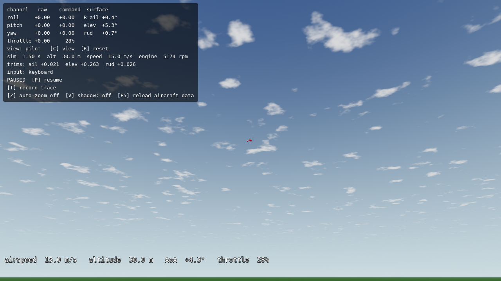
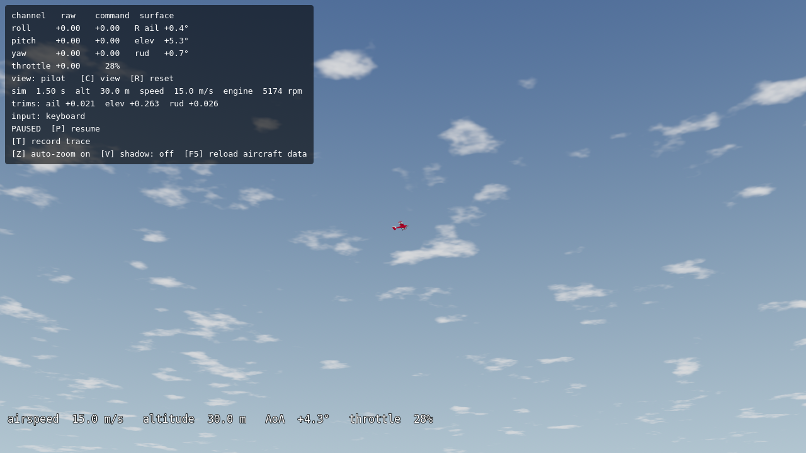
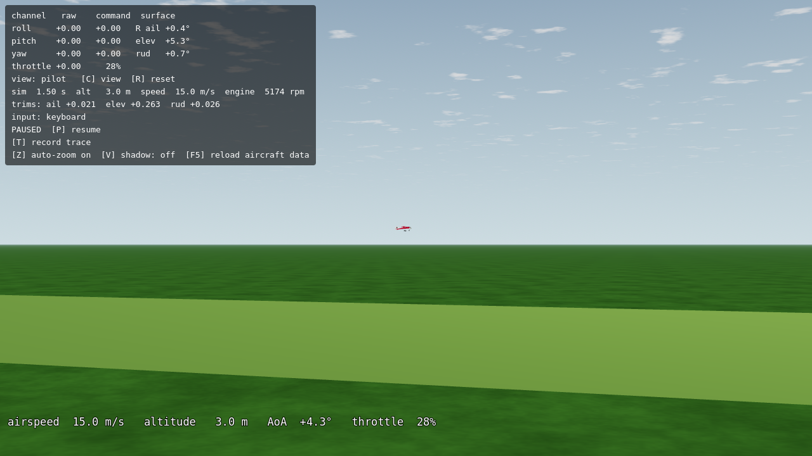
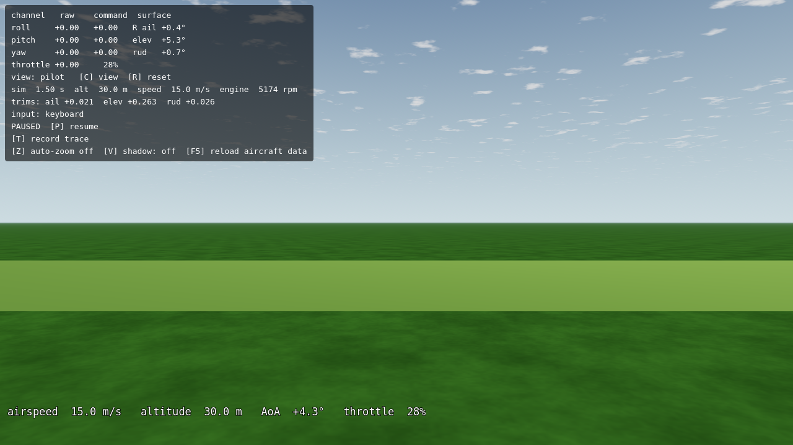
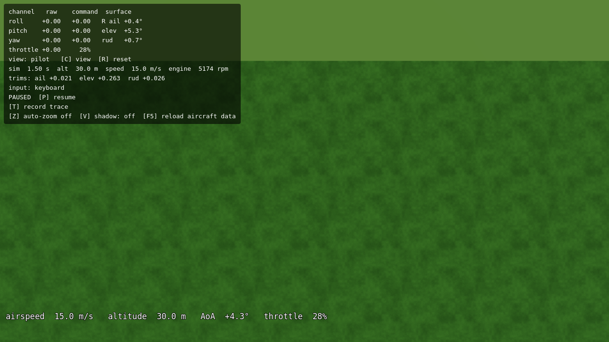
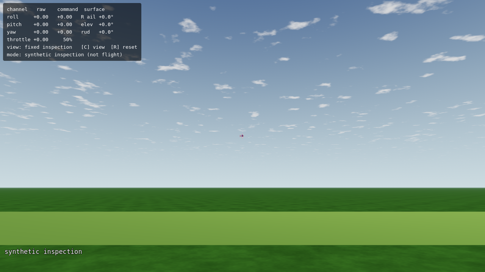
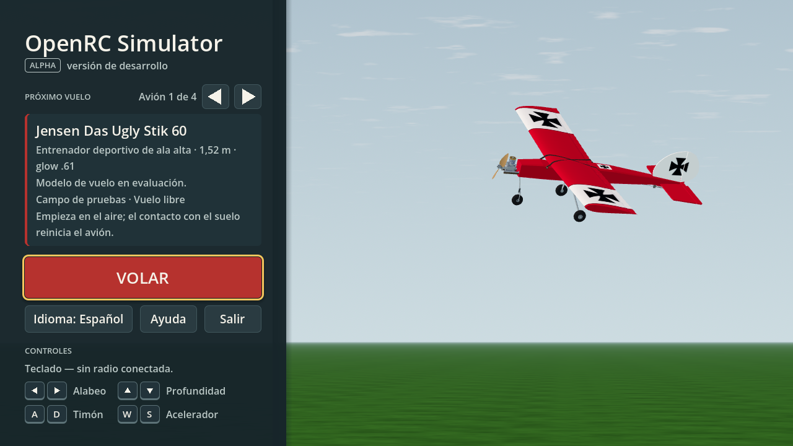
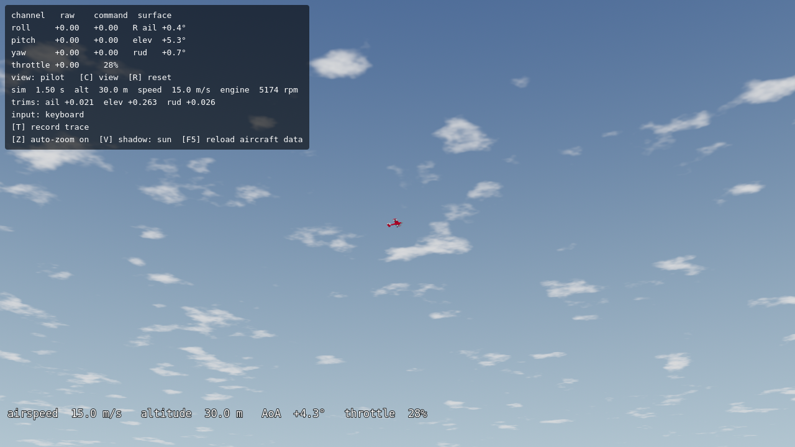

Capturas reales, sin retoque. La fase añade referencias y medición; el paisaje sigue pendiente de L5/L6. Clic en una imagen para revisar sus 1280 × 720 píxeles.
Pruebas y reproducción · Referencias licenciadas
Las dos vistas de UI corresponden a la integración posterior con P-51. Los demás casos conservan el snapshot usado para verificar VQ-01b. Las 112 capturas completas se regeneran con app/capture.sh; en docs se guarda esta selección y los manifiestos de todo el conjunto. Los metadatos identifican cada código de origen; ninguna imagen acredita rendimiento GPU.







